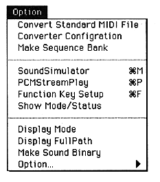
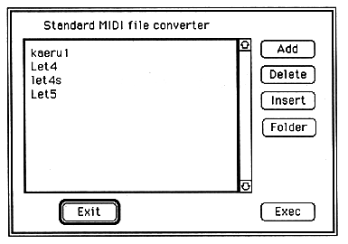

What is displayed here is a list of song names selected with Add or Insert, called the collect list. At first, nothing is displayed, and add or insert with Insert or Insert.
If you read the collect list with Collect List Open, you don't have to register with Add or Insert every time.
Multiple files can be selected and converted by Shift + mouse operation.